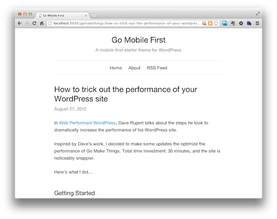

Go Mobile First
A mobile-first boilerplate for WordPress.
This style-light theme is ready to use right out of the box, and includes lots of code comments so you can be easily modify to suit your needs.
Or keep reading to learn more...
What is mobile-first?
Mobile-first is an approach to web design that's kind of like graceful degredation in reverse.
You start with a collection of basic styles that work on all browsers (including older browsers and not-so-smart phones), and then add progressive enhancements for more capable browers/devices and bigger screens.
While this theme is deliberately lightweight, you should also take some additional steps to improve the performance of your site.
What does it look like?
Go Mobile First is a modified version of Go Make Things.
It includes a fluid single column layout, responsive text, and a collapsing navigation menu on smaller screens for browsers that support it.

Powered by HTML5
This theme makes use of the new HTML5 semantics.
If you're not familiar with them, you might want to familiarize yourself. "Dive Into HTML5" by Mark Pilgrim is a good place to start.
Included Styles
Colors
Go Mobile First uses a simple, muted color palette.
Colors were chosen for their high-contrast and accessibility for color blind individuals. Feel free to customize as you see fit (you might want to use the free Color Oracle app to check for accessibility).
Link Blue: #0088cc
Button Hover Blue: #005580
Dark Gray: #272727
Muted Gray: #808080
Gray Lines & Borders: #e5e5e5
Font Stack
Helvetica Neue, Helvetica, Arial, sans-serif
Typographic Scale
Built using Chris Pearson’s Golden Ratio Typography Calculator and Iain (not a typo) Lamb’s Typograph app. Learn more about the process.
14px, 15px, 17px (base), 20px, 23px, 26px, 30px, 34px, 51px, 68px, 85px, 102px
Tutorials
Learn how to get the most out of Go Mobile First: